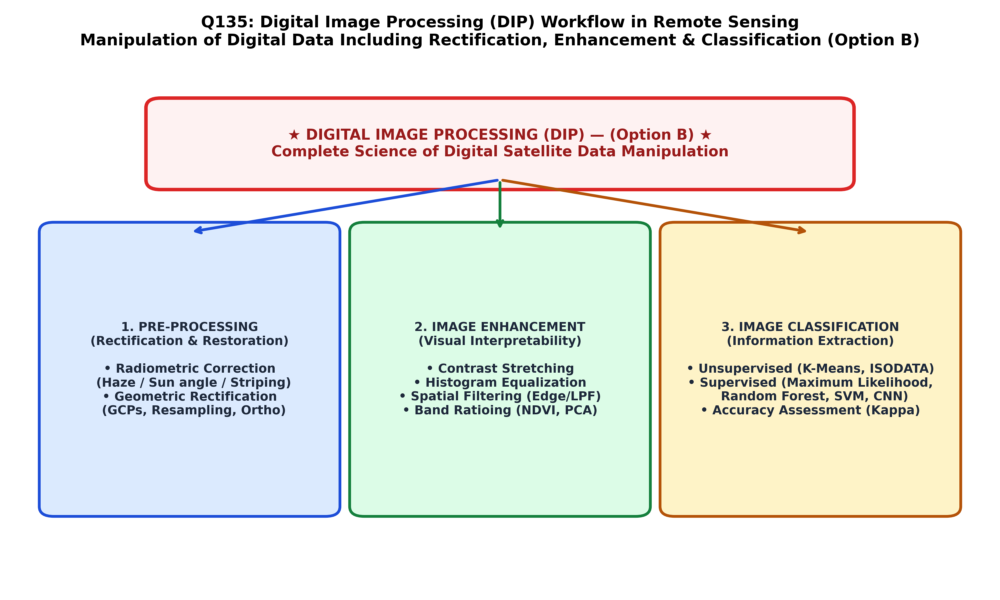

In remote sensing and computer vision, Digital Image Processing (DIP) encompasses the broad scientific discipline, theoretical framework, and computational manipulation of digital matrix data (pixel arrays) to extract information, improve visual interpretability, and correct geometric/radiometric distortions.
A digital satellite image is fundamentally modeled as a discrete two-dimensional spatial function $f(x, y)$, where $x$ and $y$ are spatial coordinates and the amplitude of $f$ at any coordinate is the Brightness Value (BV) or Digital Number (DN). DIP is systematically divided into four foundational sequential sub-disciplines (Jensen; Lillesand & Kiefer; Gonzalez & Woods):
| DIP Processing Domain | Core Mathematical Operations | Primary Technical Objective | Specific Methods & Algorithms |
|---|---|---|---|
| 1. Radiometric & Geometric Rectification (Restoration) | Sensor calibration, line-dropout repair, atmospheric dark-object subtraction (DOS), polynomial geometric warping. | Corrects sensor errors, atmospheric path radiance, and geometric distortions to restore ground fidelity. | Affine transformation, GCP regression, Nearest Neighbor / Bilinear resampling, FLAASH. |
| 2. Image Enhancement | Point and local neighborhood spatial operators: $g(x,y) = T[f(x,y)]$. | Maximizes visual contrast and feature discrimination for human visual interpretation. | Linear contrast stretching, Histogram equalization, High-pass/directional filtering, Edge detection (Sobel/Laplacian). |
| 3. Spectral Transformation | Band arithmetic, orthogonal subspace rotations, color space conversions. | Reduces dimensionality, compresses correlation, and highlights diagnostic geological absorption. | Principal Component Analysis (PCA), Band Ratios (e.g. Clay Ratio $1.6/2.2$), Normalized Difference Vegetation Index (NDVI). |
| 4. Image Classification | Supervised and unsupervised statistical and machine-learning pattern recognition. | Converts continuous spectral pixel values into thematic, discrete land cover / geological rock-type classes. | Maximum Likelihood (MLC), Minimum Distance, ISODATA, Random Forest, Support Vector Machines (SVM). |

By formal scientific definition, the umbrella discipline encompassing "the art and science of manipulation of digital data including enhancement, classification, and rectification" is universally known as Image Processing (or Digital Image Processing, Option B). Orthorectification (Option A) and Rectification (Option C) represent individual sub-operations within the broader image processing domain.
By international remote sensing and photogrammetric definitions (Jensen; Lillesand & Kiefer; Gonzalez & Woods; Bangar, p. 211), Image Processing (Digital Image Processing, DIP) is the overarching field that integrates all computational algorithms for manipulating digital image data—including radiometric/geometric rectification, contrast enhancement, spatial filtering, band transformation, and automated multispectral classification.
Orthorectification is a specialized sub-procedure of geometric rectification that corrects for terrain relief displacement using a Digital Elevation Model (DEM). It does not encompass contrast enhancement, spatial filtering, or thematic classification.
Rectification is the geometric process of transforming image pixel coordinates into a standard map projection coordinate system. It is only one preparatory phase of image processing, completely omitting enhancement and classification.
Geometric correction addresses sensor distortions and platform wobble. Like Options A and C, it is a sub-component of image restoration, not the comprehensive science defined in the question.
| Image Processing Sub-Operation | Input Data | Mathematical Operator | Output Product |
|---|---|---|---|
| Contrast Stretching | Raw low-contrast digital scene | Linear min-max normalization: $\text{DN}' = \frac{\text{DN} - \text{MIN}}{\text{MAX} - \text{MIN}} \times 255$ | Enhanced visual contrast image utilizing full dynamic range |
| Spatial Filtering (High-Pass) | Rectified multispectral image | $3 \times 3$ convolution kernel: $\sum \sum w_{ij} f(x+i, y+j)$ | Sharpened structural lineaments, geological contacts, and faults |
| Principal Component Analysis | $k$ highly correlated spectral bands | Eigenvector decomposition of covariance matrix: $\mathbf{Y} = \mathbf{V}^T \mathbf{X}$ | Uncorrelated PC bands concentrating $>95\%$ variance in PC1/PC2 |
| Supervised Classification | Multispectral image + Training sites | Bayesian Maximum Likelihood decision rule ($P(\omega_i | x)$) | Thematic lithological / land use map with quantified class boundaries |